Insync records when employees start and finish work at each site, and turns that attendance into weekly payroll and payslips.
Each work site signs in once on a shared phone or tablet. Employees then tap their own name, type their own PIN and press Clock In or Clock Out. Office staff use a website to manage sites and employees, review attendance, and run payroll every week.
| Part | Who uses it | What it is for |
|---|---|---|
| Admin website https://rhbc.online | Admin and authorized staff, each with their own email and password | Sites, employees, PINs, schedules, attendance review and corrections, leave, allowances, cash advances, weekly payroll, payslips, reports, settings, users and the audit log. |
| Attendance app Insync Attendance | One shared phone or tablet per site. Employees use it only to clock in and out. | Signing the device in with the site name and site password, showing that site's employees, checking the PIN and saving Clock In / Clock Out with the time and location. |
| Role | Signs in with | Can do |
|---|---|---|
| Admin | Own email + password (website) | Everything, for all sites: create sites and site passwords, employees, attendance, payroll, payslips, reports, settings, statutory rules, users and access, audit log. Only an admin can void payroll that is already paid. |
| Staff | Own email + password (website) | For the sites assigned to them: create and edit employees, set and reset PINs, correct attendance, rates and schedules, deductions, leave, allowances, cash advances, payroll runs, payslips and reports. Cannot create sites, change settings, manage users or read the audit log. |
| Site account | Site name + site password (app) | Show that site's employee list and record attendance. Nothing else: no pay, no government IDs, no PINs, no admin actions. |
| Employee | Own 6-digit PIN (app) | One Clock In or Clock Out per PIN entry. Employees have no account and cannot open the website. |
| Word | Meaning |
|---|---|
| Site | A work location. Its name is what the app signs in with. Its code (for example BALANGA) is created automatically and never changes. |
| App password | The site's password for the attendance app, set by an admin. At least 10 characters. |
| Employee code | Automatic number such as EMP-0001. Shown beside the name so two people with the same name can be told apart. |
| PIN | The employee's private 6-digit number. Needed for every Clock In and every Clock Out. |
| Punch | One Clock In or Clock Out saved from the app. Punches are original evidence and can never be edited or deleted. |
| Session | One Clock In together with its Clock Out. An open session has no Clock Out yet. |
| Correction | A change to a session made by staff on the website, always with a reason. The original punches are kept. |
| Payroll run | The payroll of one week for one or more sites. It moves from Draft to Ready for review, Finalized and Paid. |
| Payslip | The frozen record of one employee's pay in a finalized run. |
Do these steps once, in this order. Each step points to the chapter with the details.
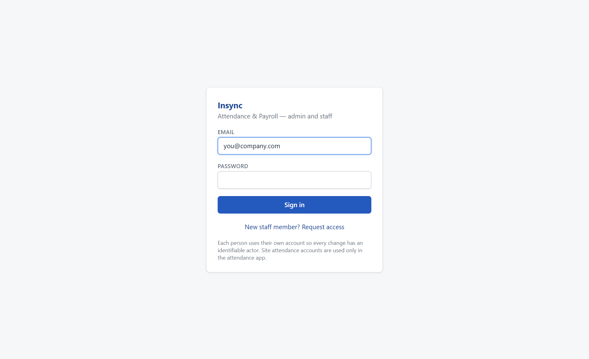
Everyone uses their own account. That is how the audit log knows who made each change.
The first page after signing in. It shows what needs attention today. The menu on the left opens every other page.
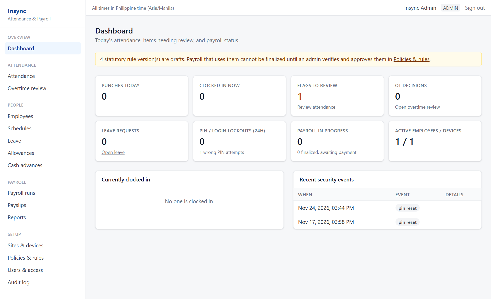
| Card | What it tells you |
|---|---|
| Punches today | How many Clock In / Clock Out actions were saved today. |
| Clocked in now | People with an open session. If some have been open for more than 16 hours it says they look like missed clock-outs. |
| Flags to review | Sessions with a problem that nobody has reviewed yet, such as missing location. The link opens Attendance already filtered. |
| OT decisions | Overtime waiting for a decision. Only used when OT approval is switched on. |
| Leave requests | Leave entries waiting for approval. |
| PIN / login lockouts (24h) | PINs or site sign-ins locked after too many wrong tries in the last day. |
| Payroll in progress | Runs still in Draft or Ready for review, and runs finalized but not yet paid. |
| Active employees / devices | Number of active employees and of phones or tablets used in the last day. |
Below the cards, Currently clocked in lists everyone at work right now and Recent security events lists PIN resets, lockouts and revoked devices. A yellow or red bar at the top appears when something blocks payroll, for example unapproved statutory rules or attendance corrected after payroll was finalized.
Menu: Setup ▸ Sites & devices. Creating and editing sites is for admins.
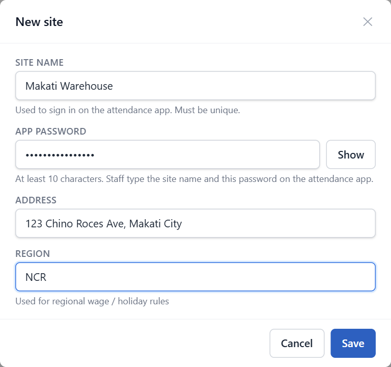
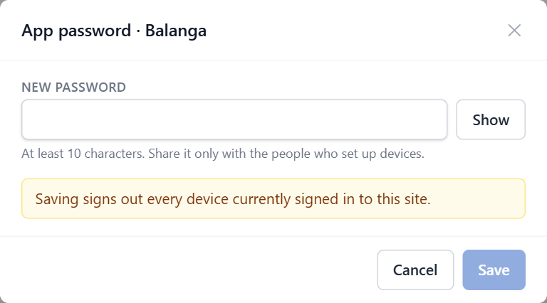
Click a site's row to open its panel underneath. The panel has two tabs.
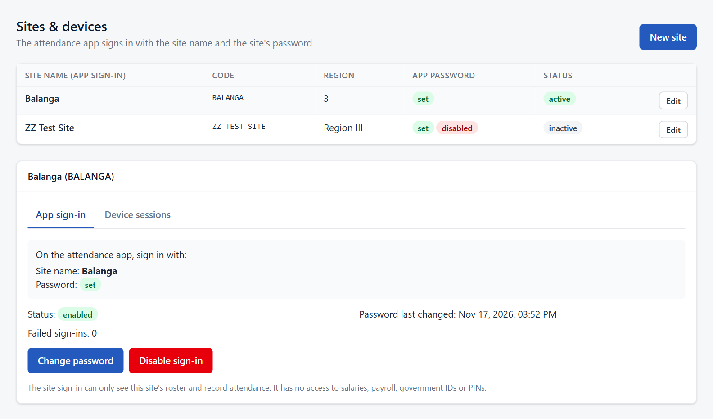
Lists every phone or tablet that has signed in to this site, when, and when it was last used. A device stays signed in for 180 days.
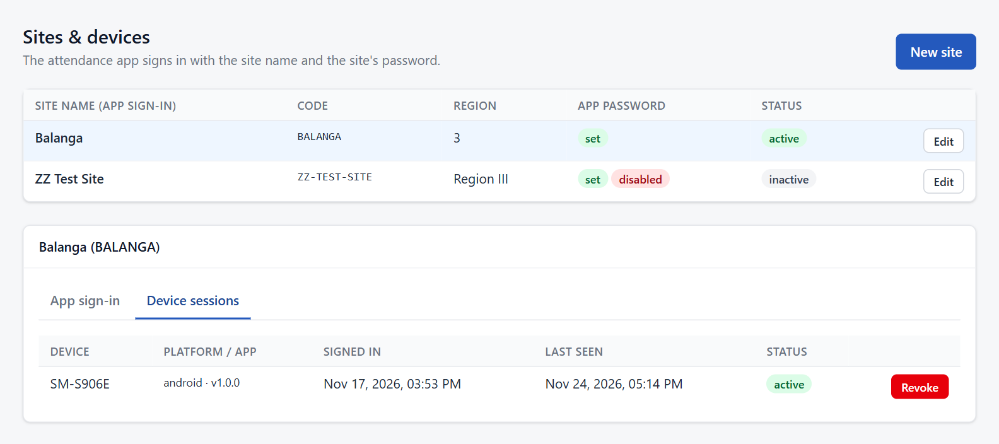
Menu: People ▸ Employees.
Search by name or code, filter by site (or Unassigned), and tick Show inactive to include people who left. The columns warn you when something is missing: no site, no daily rate, no schedule, or PIN not set. Click a row to open the employee.
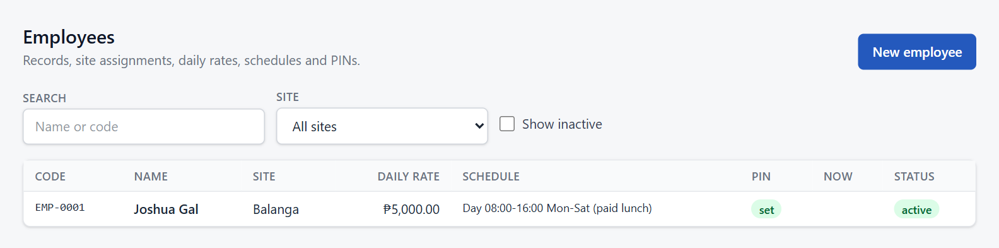
EMP-0001, EMP-0002, …) is given automatically and can never be changed.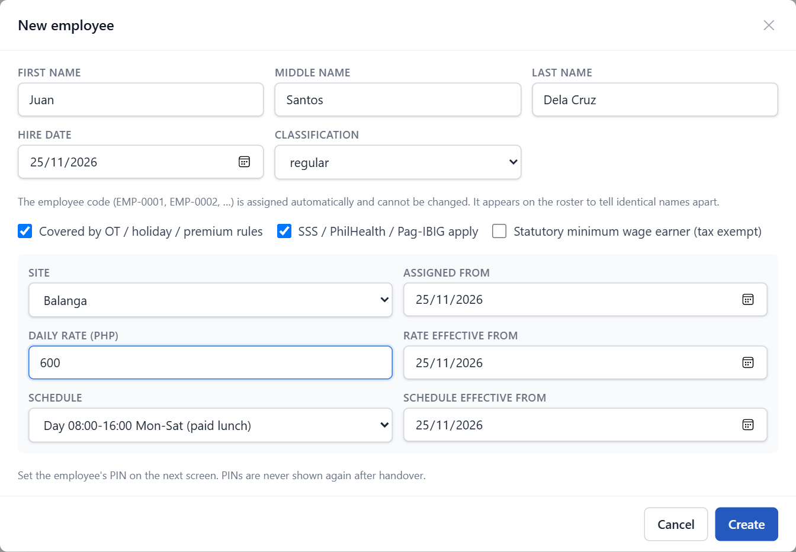
An employee's page has six tabs: Profile, Site & PIN, Rate & schedule, Deductions, Leave and Attendance.
Names, hire and separation dates, classification, government numbers (TIN, SSS, PhilHealth, Pag-IBIG) and notes. Press Save changes after editing.
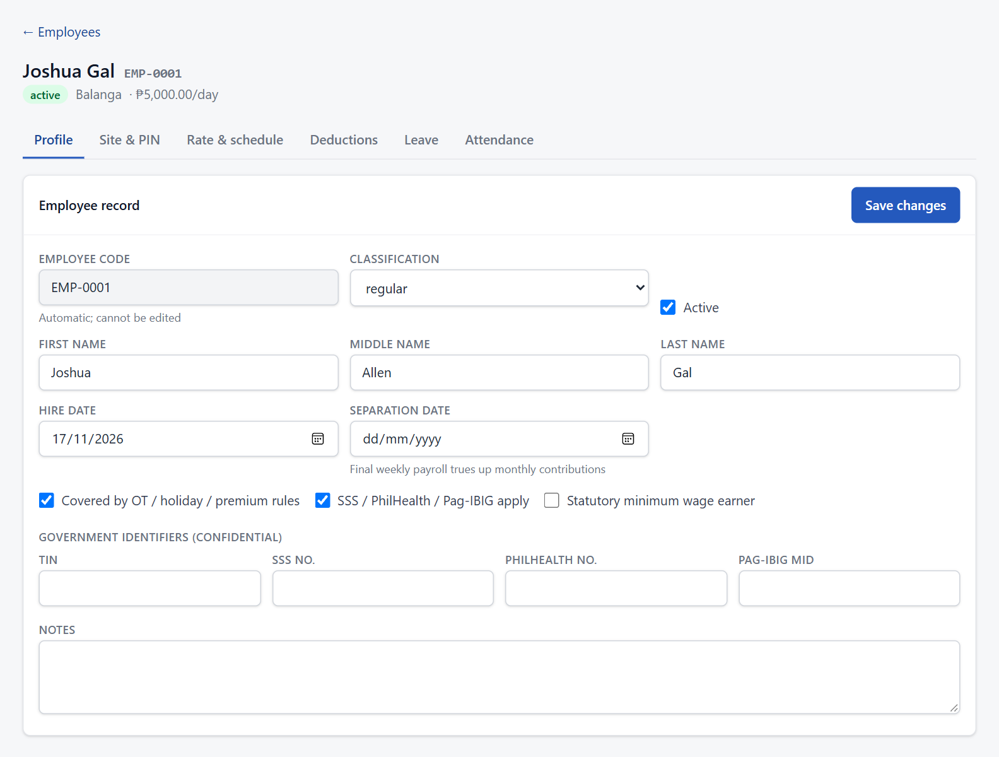
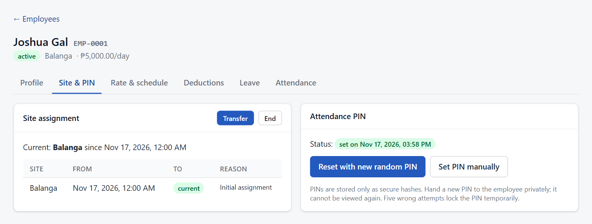
An employee belongs to one site at a time. From the effective time they appear on the new site's app and disappear from the old one. Earlier attendance and payroll keep their original site. If the employee is still clocked in at the old site, either close that session first or tick Allow them to clock out at the original site.
End removes the employee from the site without assigning a new one.
To let the employee choose their own PIN, press Set PIN manually and let them type 6 digits. Easy PINs such as 111111 or 123456 are refused.
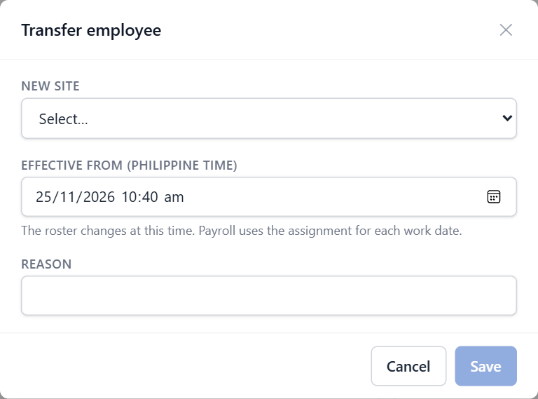
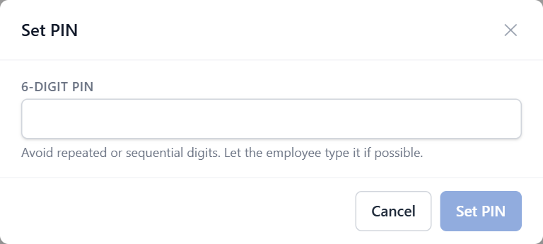
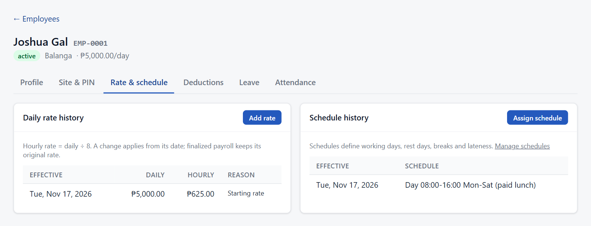
Old rates are kept. Each work date is paid at the rate in effect on that date, so a raise in the middle of a week is handled correctly. A rate cannot be added or changed for dates that are already in a finalized payroll; void and reissue that payroll first (Chapter 13).
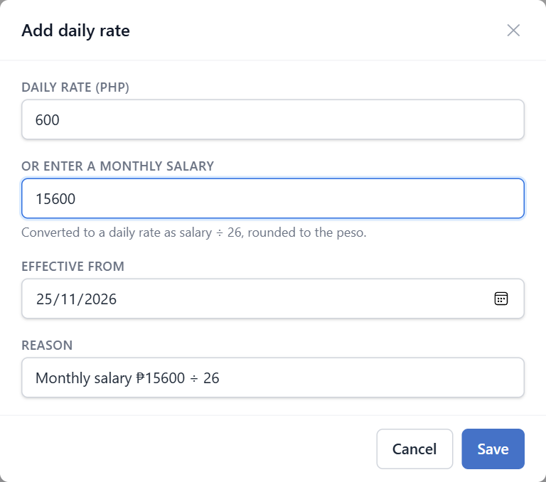
Press Assign schedule, choose the schedule and its start date, and save. Schedules are created in Chapter 6.
The amounts taken from this employee every weekly payroll: SSS, PhilHealth, Pag-IBIG, withholding tax, SSS loan and one additional deduction that you can name.
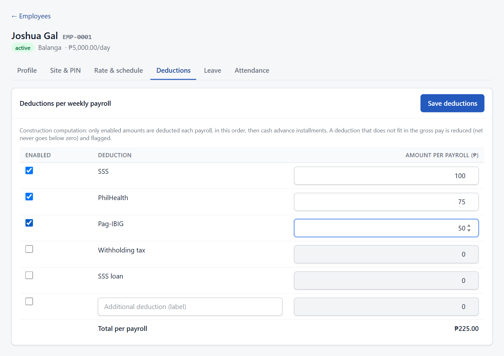
Leave shows the leave balances and every entry in the leave ledger. Press Grant / adjust to add the yearly entitlement, a carry-over, or a correction (a note is required for corrections). Recording a leave day is done on the Leave page (Chapter 10).
Attendance lists the employee's latest 60 sessions, with a link that opens them in Attendance review.
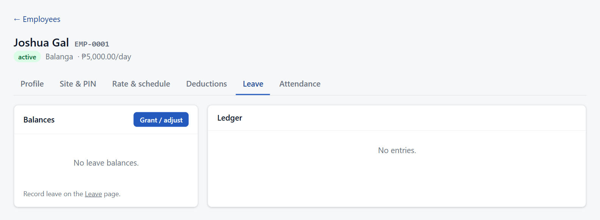
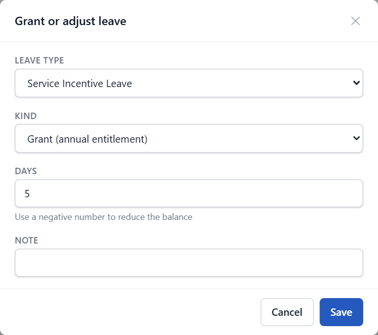
Menu: People ▸ Schedules. A schedule says which days are working days and what the normal hours are.
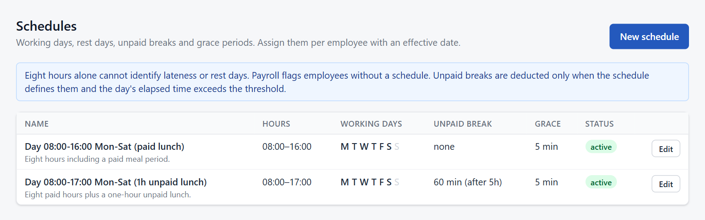
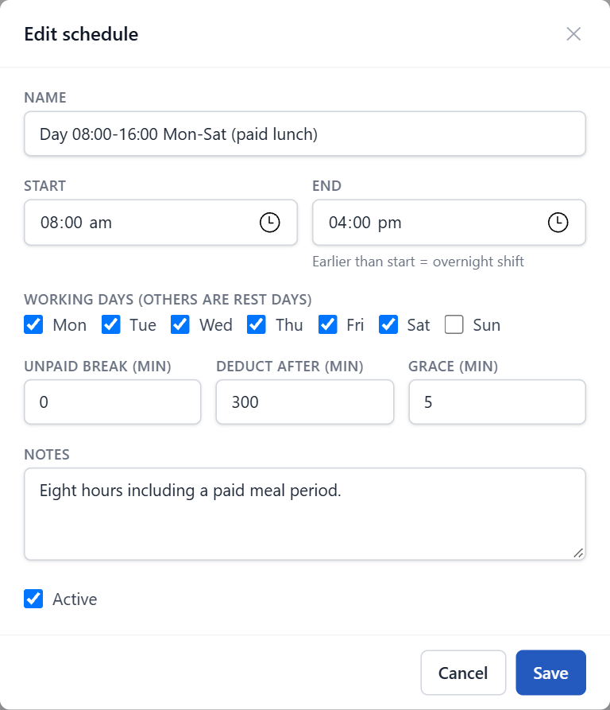
The app on the site's shared phone or tablet. Staff sign the device in once; employees then clock in and out by themselves.
The app is currently opened through Expo Go (a free app from the Play Store or App Store) while it is being tested:
Insync folder and run npm.cmd run app. A QR code appears.Illustration of the app screens. Labels are shown in English and Filipino in the real app.
The app needs internet to save attendance. The top of the list shows Online or Offline.
| Message | What it means and what to do |
|---|---|
| Wrong site name or password. | Check the site name on the website (Sites & devices) and the app password. An admin can set a new password. |
| Too many failed sign-ins. Try again later. | 10 wrong site passwords. Wait 15 minutes. |
| This site account is disabled. | An admin disabled the site's sign-in or closed the site. |
| Site session ended. Please sign in again. | The device was revoked, the password was changed, or 180 days passed. Sign in again. |
| Wrong PIN. (… tries left) | Type it again carefully. |
| PIN locked for a while. | 5 wrong PINs. Wait 15 minutes, or ask staff to unlock or reset it. |
| Too many wrong PINs on this device. | 15 wrong PINs on one device in 15 minutes. Wait 15 minutes. |
| You have no PIN yet. Please see staff. | Staff must generate a PIN for this employee. |
| You are not on this site's list. | The employee is assigned to another site, or is inactive. |
| You are still clocked in at another site. | Clock out at that site, or ask staff to close the session. |
| You are already clocked in. / You are not clocked in yet. | The action does not match the current state. Go back and enter the PIN again. |
| Location is required. Turn on location and try again. | Only when the setting "Block attendance until location works" is on. Turn on the phone's location. |
| Time ran out. Enter your PIN again. | The confirm screen was left open too long. |
Staff can also sign out any device from the website (Chapter 4, Device sessions).
Menu: Attendance ▸ Attendance. Check it every day or at least before each payroll.
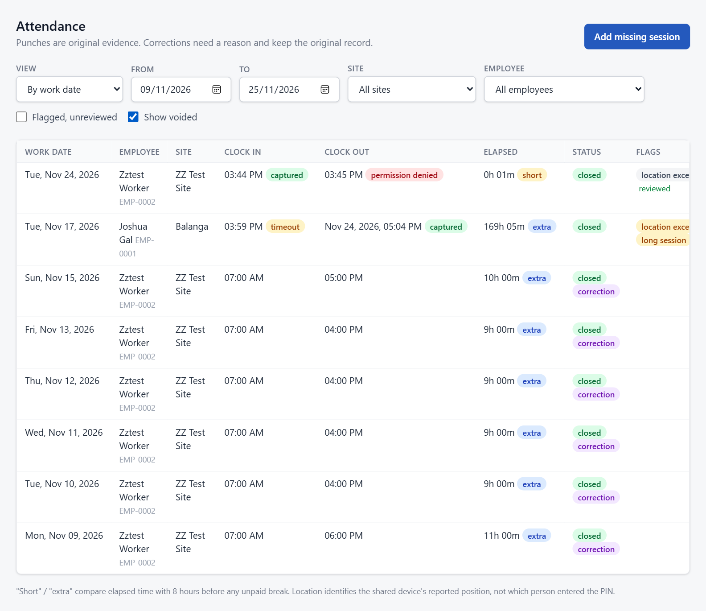
| Badge | Meaning |
|---|---|
| captured beside a time | Location was recorded. Click it to open the map. |
| permission denied timeout unavailable stale | Location was not recorded: permission off, GPS too slow, GPS off, or the position was older than 2 minutes. |
| short / extra | Less than or more than 8 hours between in and out (before lunch is deducted). |
| open closed voided | Session has no Clock Out yet / is complete / was cancelled by staff. |
| correction | The session was entered by staff, not by the app. |
| location exception | A punch has no location. Review it; it does not stop payroll. |
| long session | Longer than 16 hours, usually a forgotten Clock Out. It blocks payroll until corrected or reviewed. |
| missing in the Clock out column | Open for more than 16 hours. It blocks payroll until closed. |
Click a row. The window shows the site, both times, the elapsed time, each punch's location with accuracy and a map link, the device used, the flags and every correction made so far.
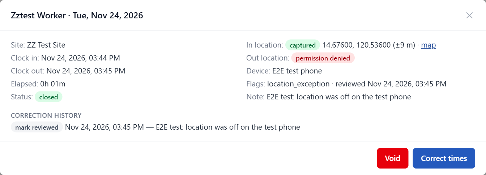
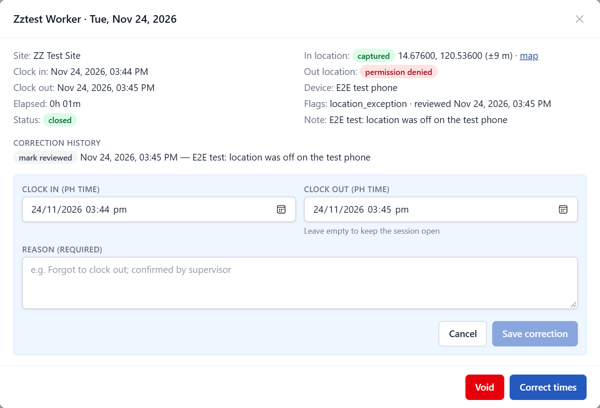
Use this when the app could not be used at all, for example no signal for the whole day.
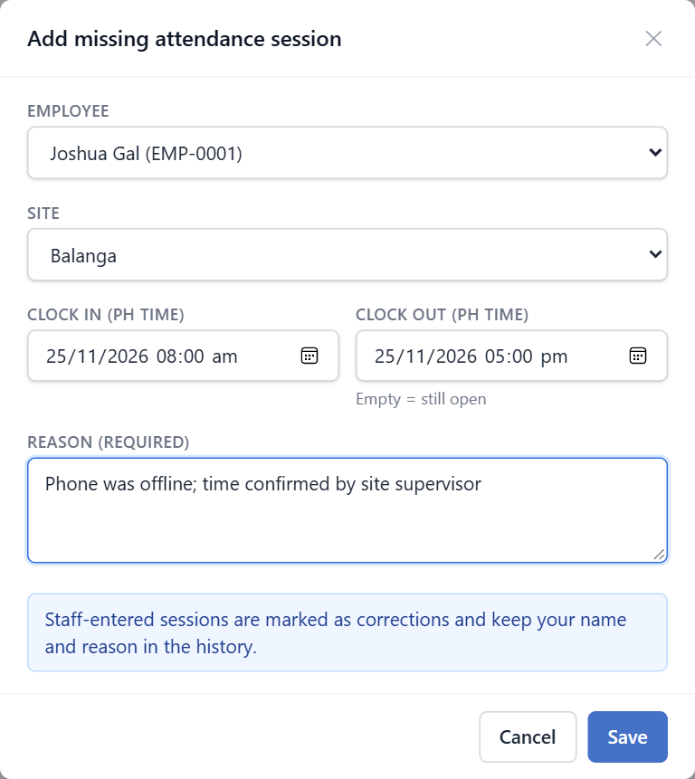
Sessions cannot overlap. If it says the session overlaps another one, check the employee's other sessions for that day.
Menu: Attendance ▸ Overtime review.
With the construction computation overtime is automatic: every hour after 9 hours between Clock In and Clock Out is paid as OT, and this page is not needed.
If you want every overtime to be approved first, an admin ticks Extra time requires an OT decision before payroll can be finalized in Policies & rules. Then:
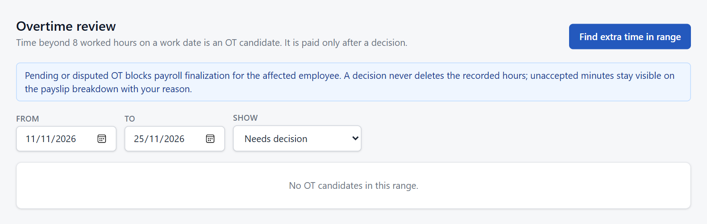
Pending or disputed overtime stops the payroll run from being finalized. The recorded hours are never deleted; only the paid part changes.
Menu: People ▸ Leave. Staff record leave for employees; employees do not file it themselves.
Three leave types are set up: Service Incentive Leave (paid, uses the balance), Sick Leave (paid, uses the balance) and Leave Without Pay.
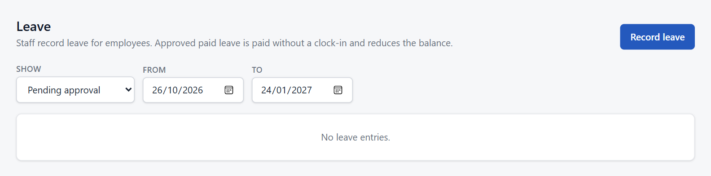
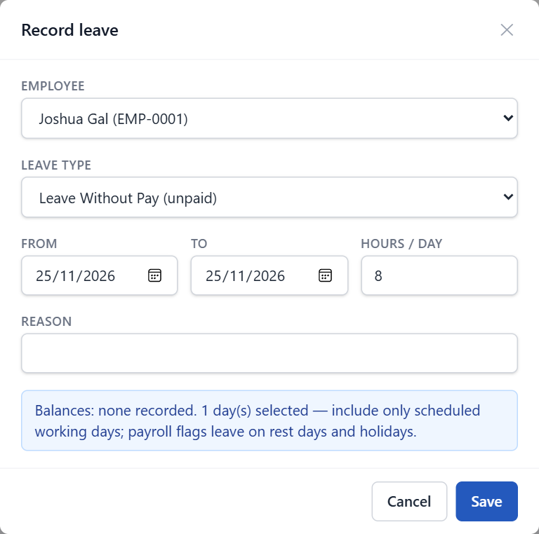
Menu: People ▸ Allowances. Extra amounts added to an employee's weekly pay.
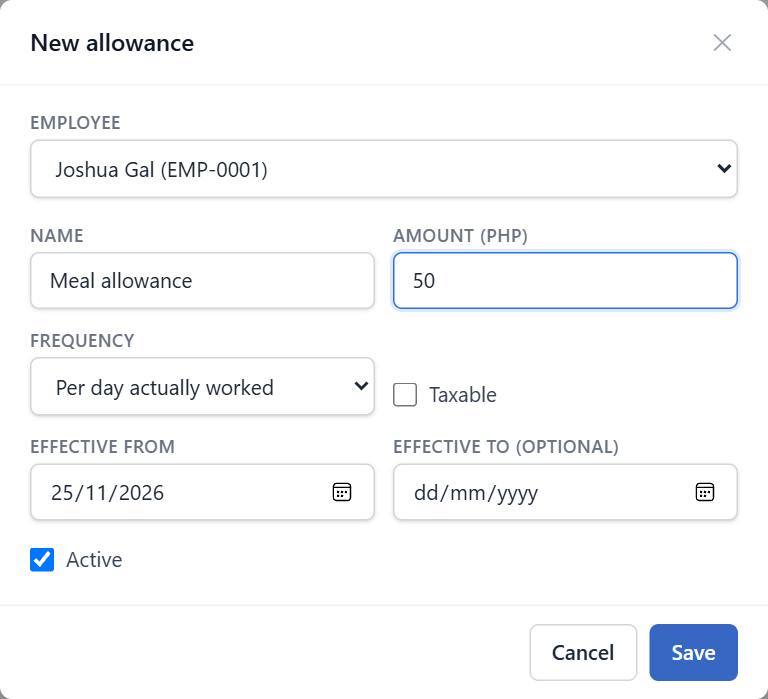
To stop an allowance, press Edit and untick Active or set the end date. The Taxable box only matters in the DOLE computation, where tax is calculated automatically.
Menu: People ▸ Cash advances. Money given in advance and repaid from weekly pay.
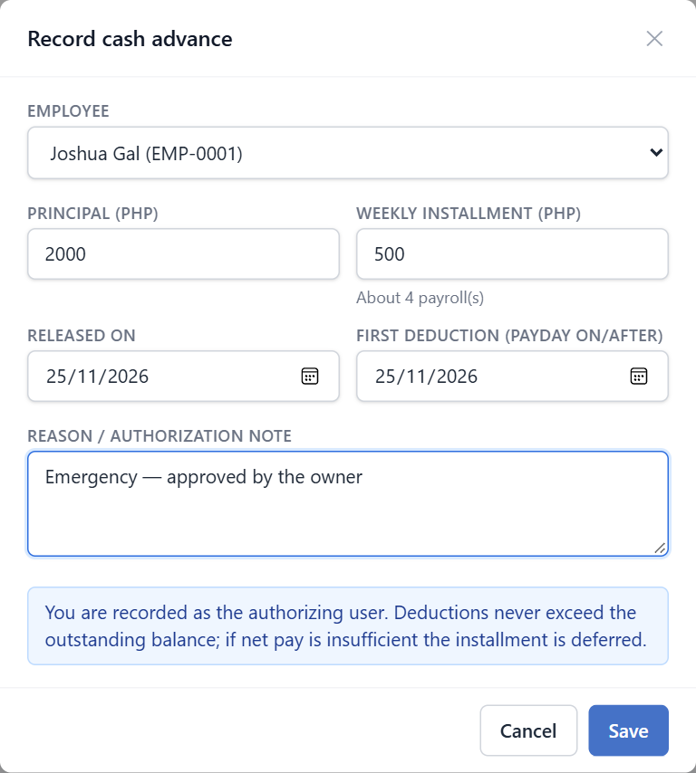
Click an advance to see its ledger. There you can change the installment amount or press Manual adjustment to record a cash repayment (negative amount) or an increase (positive amount). A reason is required.
Menu: Payroll ▸ Payroll runs. One run pays one week (Monday to Sunday by default) for the sites you choose.
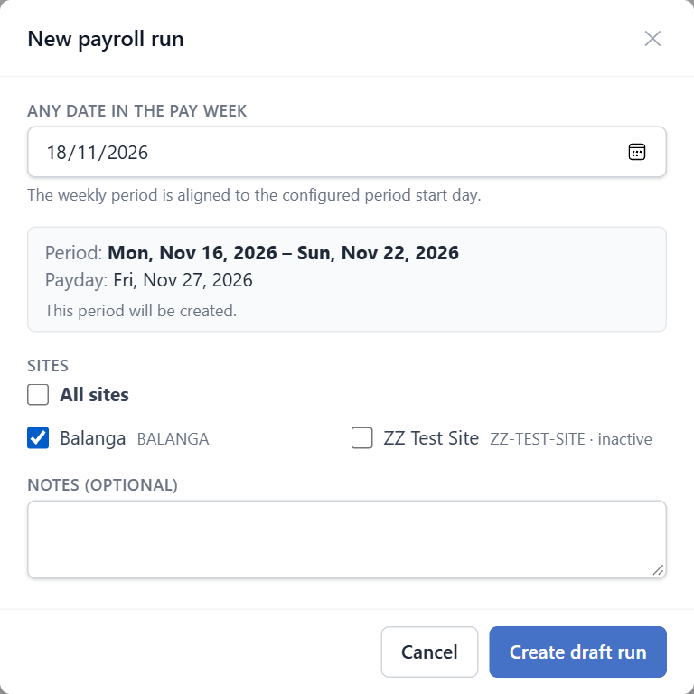
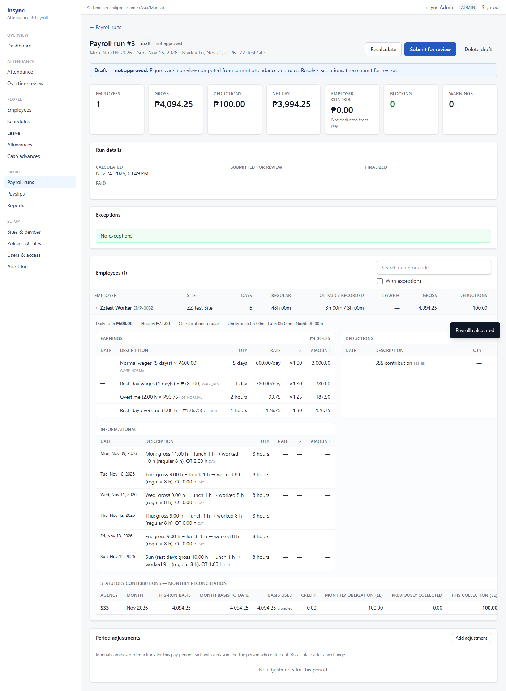
The Exceptions panel lists problems found while calculating. Blocking ones must be fixed before the run can be finalized; each has a link to the page where you fix it. After fixing, press Recalculate.
| Exception | Blocks? | How to clear it |
|---|---|---|
| Missing clock-out | yes | Attendance ▸ open the session ▸ Close / correct. |
| Long session (over 16 h) | yes | Correct the times, or Mark reviewed if it is real. |
| No daily rate effective on a date | yes | Employee ▸ Rate & schedule ▸ Add rate with an earlier effective date. |
| Worked hours plus paid leave exceed 8 hours | yes | Cancel the leave or correct the attendance. |
| An earlier payroll run is not finalized | yes | Finalize (or delete) the earlier week's run first. Weeks are paid in order. |
| OT pending / disputed / changed | yes | Only when OT approval is on: decide it in Overtime review. |
| Location exception | no | Review the session in Attendance and Mark reviewed. |
| Deduction reduced (capped) | no | Pay was too small for all deductions. Decide how to collect the rest. |
| Cash advance deferred / partial | no | The balance stays owed and is collected in a later week. |
| Already in another run | no | The employee is paid in another run of the same week and is left out here. |
Holiday pay is entered by hand in the construction computation. Use Period adjustments at the bottom of the run page, while the run is still a draft.
A finalized run can never be edited. To correct it:
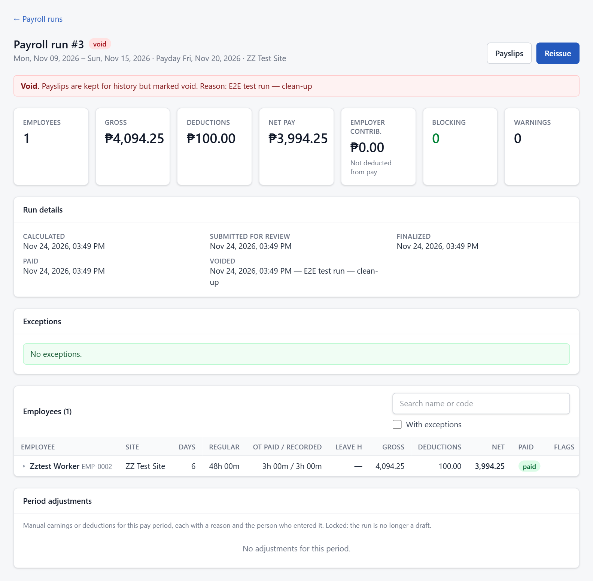
A draft that is not needed can simply be removed with Delete draft.
Menu: Payroll ▸ Payslips, or the Payslips button on a finalized run.
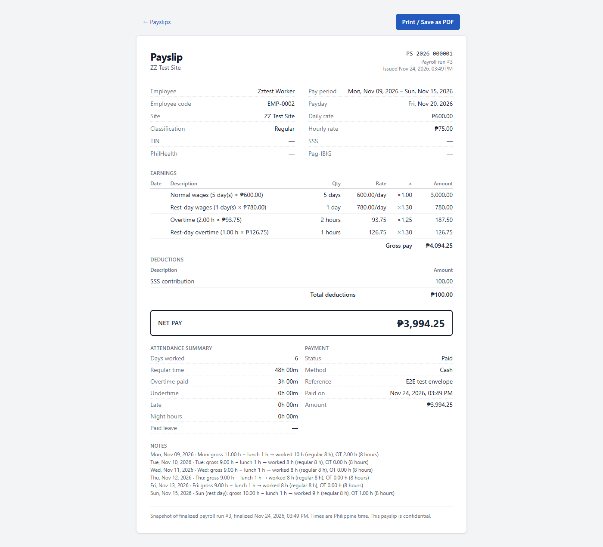
PS-2026-000001 and are never reused.Menu: Payroll ▸ Reports. Each report downloads a CSV file that opens in Excel or Google Sheets. Staff only get data for their own sites.
| Report | Choose | Contains |
|---|---|---|
| Payroll register | A payroll run | One row per employee: site, days, regular and OT time, gross, each deduction (SSS, PhilHealth, Pag-IBIG, tax, cash advance, others), net pay and payment. |
| Government contributions by month | A month | SSS, PhilHealth and Pag-IBIG collected from each employee in finalized or paid runs, with totals per agency on screen. |
| Attendance sessions | Date range, optional site | Every session: work date, employee, site, in, out, minutes, status, source, flags, location status and coordinates. |
| Recorded payments | Date range | Each payment: date, run, employee, amount, method and reference. |
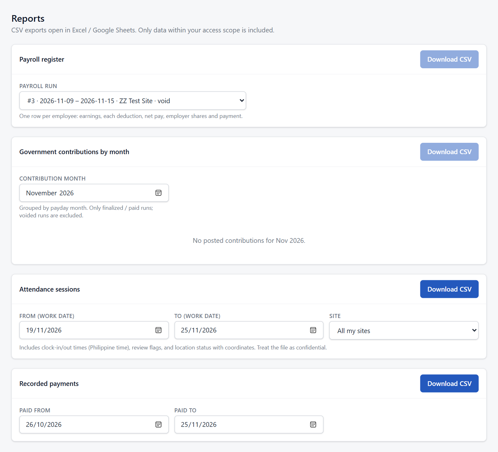
Menu: Setup ▸ Policies & rules. Everyone can read these pages; only admins can change them.
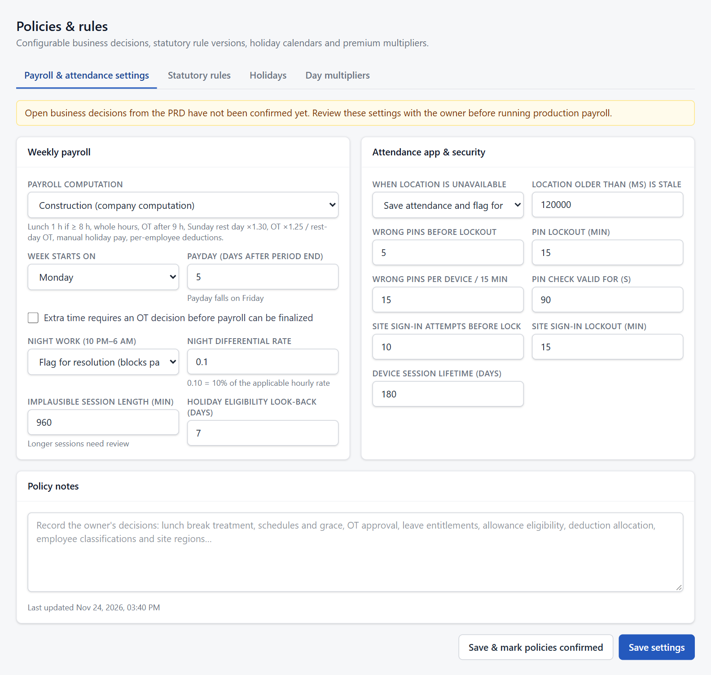
| Setting | Default | What it does |
|---|---|---|
| Payroll computation | Construction | Which formulas payroll uses: the company's construction computation or the DOLE statutory engine (Chapter 19). |
| Week starts on | Monday | First day of each pay week. |
| Payday (days after period end) | 5 (Friday) | The payday printed on runs and payslips. |
| Extra time requires an OT decision | Off | On: overtime must be approved in Overtime review before finalizing. |
| Night work / Night differential rate | Flag · 0.10 | DOLE computation only: flag night hours, or pay 10% more for 10 PM–6 AM. |
| Implausible session length | 960 min (16 h) | Longer sessions are flagged "long session" and block payroll until reviewed. |
| When location is unavailable | Save and flag | Or "Block attendance until location works". |
| Location older than … is stale | 120000 ms (2 min) | Older positions are not accepted as current. |
| Wrong PINs before lockout / PIN lockout | 5 · 15 min | Per employee. |
| Wrong PINs per device / 15 min | 15 | Protects against guessing on one device. |
| PIN check valid for | 90 s | Time to press Clock In / Out after a correct PIN. |
| Site sign-in attempts / lockout | 10 · 15 min | For the site password on the app. |
| Device session lifetime | 180 days | How long a device stays signed in. |
| Policy notes | — | Free text to record the owner's decisions. Save & mark policies confirmed stamps the date. |
Versions of the SSS, PhilHealth, Pag-IBIG and BIR withholding tables. They are used only by the DOLE computation. They were loaded as draft and must be checked against the current official tables and approved by an admin before that computation can finalize payroll. In the construction computation, contributions come from each employee's Deductions tab, so the Dashboard reminder about draft rules can be ignored.
Holidays holds the calendar per year (regular, special non-working, special working; national or for one site). Press Add holiday to add one with its official source. Day multipliers lists the DOLE pay rates per kind of day. Both are used only by the DOLE computation; in the construction computation holiday pay is entered by hand (Chapter 13).
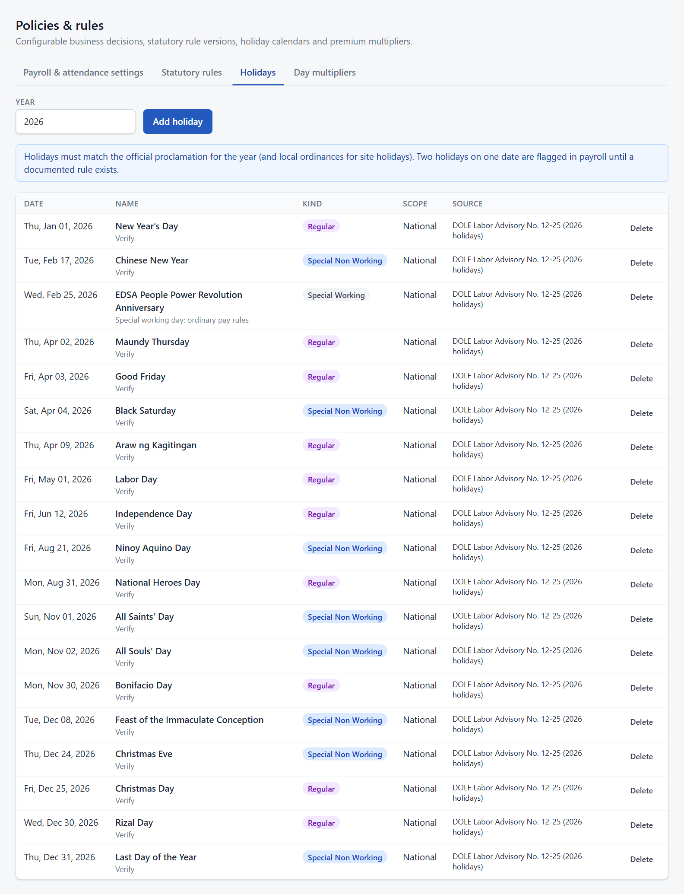
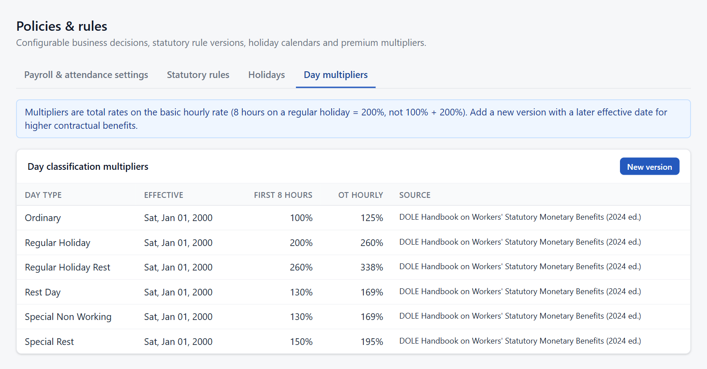
Menu: Setup ▸ Users & access (admins only).
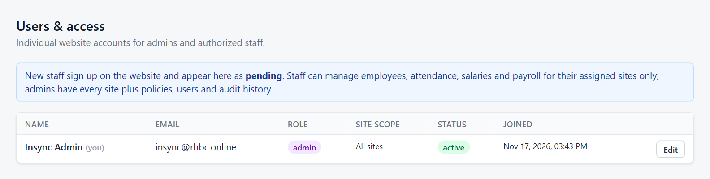
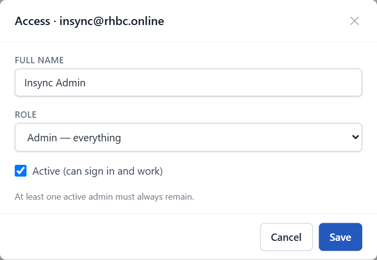
select public.bootstrap_admin('your@email');Menu: Setup ▸ Audit log (admins only). A permanent record of every change to people, pay, rules and access.
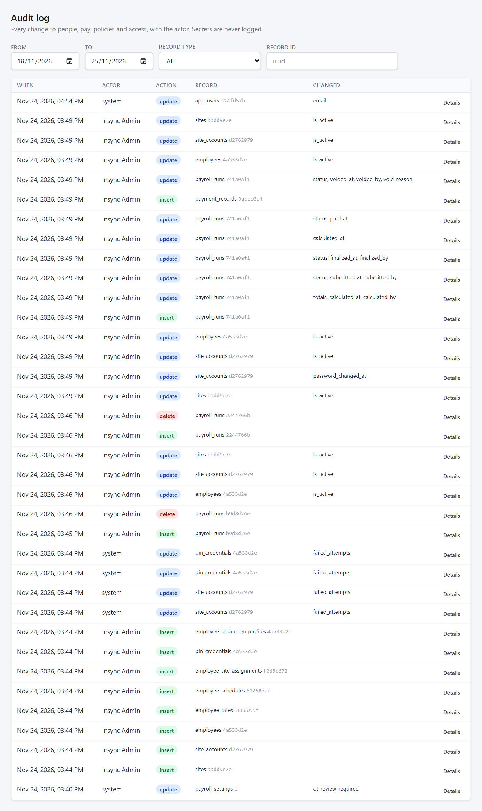
The log cannot be edited or deleted. Passwords and PINs are never written to it. Attendance corrections have their own history inside each session (Chapter 8).
The default is the company's construction computation. R2 means "rounded to 2 decimals".
Gross hours = time between Clock In and Clock Out Lunch = 1 hour if gross hours are 8 or more, otherwise 0 Worked hours = gross hours − lunch, rounded DOWN to a whole hour Regular hours = worked hours, but not more than 8 Overtime (OT) = gross hours − 9, if more than zero (R2)
| Clock In – Out | Gross | Lunch | Worked | Regular | OT | Paid as |
|---|---|---|---|---|---|---|
| 7:00 AM – 4:00 PM | 9.00 h | 1 h | 8 h | 8 h | 0.00 h | 1 day |
| 7:00 AM – 5:30 PM | 10.50 h | 1 h | 9 h | 8 h | 1.50 h | 1 day + 1.5 h OT |
| 7:00 AM – 3:30 PM | 8.50 h | 1 h | 7 h | 7 h | 0.00 h | 7/8 of a day |
| 7:00 AM – 12:00 NN (half day) | 5.00 h | 0 | 5 h | 5 h | 0.00 h | 5/8 of a day |
Sunday is the rest day, decided by the calendar date of the Clock In. A shift that passes midnight counts on the day it started.
Normal days = regular hours on Monday–Saturday ÷ 8 (plus paid leave hours ÷ 8) Rest-day days = regular hours on Sunday ÷ 8 Rest-day rate = R2(daily rate × 1.30) Normal wages = R2(daily rate × normal days) Rest-day wages = R2(rest-day rate × rest-day days) OT hourly rate = R2(daily rate ÷ 8 × 1.25) Rest-day OT rate = R2( R2(rest-day rate ÷ 8) × 1.30 ) Gross pay = wages + OT pay + holiday pay + allowances + other earnings Net pay = gross pay − deductions (never below zero)
Deductions are taken in this order: SSS, PhilHealth, Pag-IBIG, withholding tax, SSS loan, additional deduction (all from the employee's Deductions tab), then one-time deductions entered on the run, then cash-advance installments.
One week: Monday 7:00 AM–6:00 PM, Tuesday to Friday 7:00 AM–4:00 PM, Sunday 7:00 AM–5:00 PM. Deductions ₱500.
| Part | Calculation | Amount |
|---|---|---|
| Normal wages | 5 days × ₱600 | ₱3,000.00 |
| Rest-day rate | ₱600 × 1.30 | ₱780.00 |
| Rest-day wages | 1 day × ₱780 | ₱780.00 |
| OT hourly rate | (₱600 ÷ 8) × 1.25 | ₱93.75 |
| OT pay (Monday) | 2 hours × ₱93.75 | ₱187.50 |
| Rest-day OT rate | (₱780 ÷ 8) × 1.30 | ₱126.75 |
| Rest-day OT pay (Sunday) | 1 hour × ₱126.75 | ₱126.75 |
| Gross pay | 3,000 + 780 + 187.50 + 126.75 | ₱4,094.25 |
| Net pay | 4,094.25 − 500 | ₱3,594.25 |
This exact example is one of the automatic tests of the system and was also run on the live website.
Switch in Policies & rules ▸ Payroll computation. It pays by the minute (daily rate ÷ 480), applies each schedule's unpaid break and rest days, computes holiday pay automatically from the holiday calendar, and calculates SSS, PhilHealth, Pag-IBIG and withholding tax from approved rule tables, reconciled per month. Total pay rates per kind of day:
| Kind of day | First 8 hours | Overtime per hour |
|---|---|---|
| Ordinary working day | 100% | 125% |
| Rest day, or special non-working day | 130% | 169% |
| Special non-working day that is also a rest day | 150% | 195% |
| Regular holiday | 200% | 260% |
| Regular holiday that is also a rest day | 260% | 338% |
Before using it, an admin must verify and approve the statutory rules and the holiday calendar (Chapter 16).
| Protection | How it works |
|---|---|
| The app sees only attendance | The site sign-in can do seven things only: sign in, check its session, list its own employees, check a PIN, save a punch, re-check a punch, sign out. It cannot read pay, payslips, government numbers or PINs, even by calling the server directly. |
| Staff see only their sites | The database itself filters every table by the staff member's assigned sites. |
| Secrets are not readable | PINs, site passwords and device keys are stored only as one-way hashes. Nobody, including admins, can view an existing PIN or password. |
| Guessing is blocked | 5 wrong PINs lock the PIN for 15 minutes; 15 wrong PINs lock a device for 15 minutes; 10 wrong site passwords lock the site sign-in for 15 minutes. Lockouts appear on the Dashboard. |
| Attendance cannot be rewritten | Punches are permanent. Corrections need a reason, record who made them and keep the original. |
| Finalized pay cannot be rewritten | Finalized runs and payslips are locked. Changes go through Void and Reissue, which leave a visible trail. |
| Location | Taken only at Clock In / Clock Out, with the employee able to see the notice on the app. No background tracking. Location shows where the shared device was, not who typed the PIN. |
| Audit trail | Every change by admins and staff is logged with the person and time. |
| Encrypted connection | The website and the app use HTTPS for all traffic. |
| Problem | What to do |
|---|---|
| Website: "Invalid login credentials" | Clear the Password box and type it yourself; the browser may be filling in an old password. Check you are using your current email. |
| Website: "Waiting for access" | An admin has not approved your account yet (Chapter 17). |
| Website: "Supabase is not configured" | The hosting is missing its two settings. See Chapter 22, Hosting. |
| App: "Wrong site name or password" | Type the site name exactly as on Sites & devices. If the password is forgotten, an admin sets a new one with Change password. |
| App: an employee is not in the list | Check they are Active, assigned to this site (Site & PIN tab) and that the assignment has already started. Pull the list down to refresh. |
| Employee forgot their PIN | Employee page ▸ Site & PIN ▸ Reset with new random PIN. |
| Employee forgot to clock out | Attendance ▸ View "Open sessions" ▸ open it ▸ Close / correct, with the real time and a reason. |
| Employee clocked in by mistake | Open the session and press Void, with a reason. |
| No signal at the site all day | Attendance ▸ Add missing session for each person, with a reason. |
| Payroll: Finalize button is grey | There are blocking exceptions. Fix each one (Chapter 13, Step 3) and press Recalculate. |
| Payroll: an employee is missing from the run | They have no attendance, leave or pay in that week, they belong to a site not ticked for this run, or they are already in another run of the same week. |
| Payroll: "No daily rate effective on …" | Add a rate whose effective date is on or before that work date. |
| Payroll: nothing was deducted | The employee's Deductions tab is empty or the rows are not ticked Enabled. |
| Payroll: "changed since review" | Attendance or pay data changed after the run was submitted. Review the new figures, submit and finalize again. |
| Wrong pay found after finalizing | Void the run, correct the data, then Reissue (Chapter 13). |
| "Payroll is finalized through …" when changing a rate | That date is already paid. Void and reissue the affected run, or make the new rate effective after that date. |
| A site or employee cannot be deleted | By design. Untick Active instead, so history stays complete. |
For the person who maintains the system. Day-to-day users can skip this chapter.
| Part | Technology | Where |
|---|---|---|
| Database and API | Supabase (PostgreSQL 17, row-level security, SQL functions, email sign-in) | Folder supabase/; hosted Supabase project |
| Admin website | React 19, TypeScript, Vite, Tailwind CSS, supabase-js | Folder admin/; hosted on Netlify at rhbc.online |
| Attendance app | Expo SDK 54 (React Native 0.81), expo-location, expo-secure-store | Folder app/ |
| Tests | Node scripts, PGlite, embedded PostgreSQL 17, Playwright | Folders supabase/tests/ and e2e/ |
| Source code | Git repository | github.com/allencortez1000/Insync (branch main) |
The database is created by running the files in supabase/migrations/ in order in the Supabase SQL Editor. All twelve have been applied to the live database. Any new file added later must be run the same way.
| No. | File (ends with) | What it adds |
|---|---|---|
| 1 | 000100_schema | All tables, types and integrity rules. |
| 2 | 000200_security | Roles, row-level security, permissions, audit trigger. |
| 3 | 000300_attendance_device_api | The functions the app calls (sign-in, roster, PIN check, punch). |
| 4 | 000400_payroll_engine | DOLE statutory payroll engine and the run life-cycle. |
| 5 | 000500_admin_api | Website functions: PINs, transfers, corrections, OT, leave, users; views. |
| 6 | 000600_reference_data | Multipliers, leave types, sample schedules, draft statutory rules, 2026 holidays. |
| 7 | 000700_lockdown | Final permission lock-down for the app's key. |
| 8 | 000800_site_name_login | Sign in with site name + password; automatic, locked site codes. |
| 9 | 000900_employee_code_auto | Automatic, locked employee codes (EMP-0001…). |
| 10 | 001000_construction_payroll | Construction computation, per-employee deductions, holiday-pay adjustments. |
| 11 | 001100_fixes | Site codes for names with ñ and accents. |
| 12 | 001200_safeupdate_fix | Fix so payroll Calculate works through the Supabase API. |
admin/ folder (settings in netlify.toml) every time something is pushed to the main branch on GitHub. Domain: rhbc.online (DNS at Hostinger: A record @ → Netlify, CNAME www → the Netlify site).VITE_SUPABASE_URL and VITE_SUPABASE_ANON_KEY. After changing them, trigger a new deploy. Never use the service_role key in the website or app.EXPO_PUBLIC_SUPABASE_URL and EXPO_PUBLIC_SUPABASE_ANON_KEY in app/.env.https://rhbc.online, so confirmation emails link to the right place.npm.cmd run web start the website locally (http://localhost:5173) npm.cmd run app start the attendance app for Expo Go (shows a QR code) npm.cmd run test:db run the 27 database tests npm.cmd run test:pg17 the same tests on a real PostgreSQL 17 + security audit
app/app.json first.